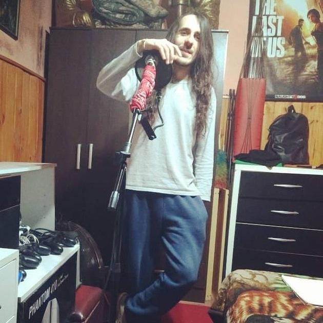

Who Will Love Me?

Have you ever felt like the protagonist of a story the author forgot to finish? That sensation of drifting in the middle of a plot’s "climax" without ever seeing a resolution in sight?
I was searching through my 2018 diaries to thoroughly deconstruct and reflect upon the third track I created with my former band, "Ssendas." This song touches upon the doubt of existence—not in an overly raw way, but from a somewhat distant perspective.
The winter chill was beginning to settle over Buenos Aires, Argentina. I bundled up and headed to the guitarist's house to begin recording a new track.
For two months during autumn, we had struggled to finish the third song for the album. Originally, the band's manager was supposed to sing it, but for some reason, neither his style nor his voice fit at all, and the song was eventually scrapped.
To fill that void, I pulled out a notebook of ideas. I had jotted something down while meditating by the sea once, and I had always wanted to turn it into a song. I had no doubts. The biggest difficulty was coordinating schedules, as the guitarist would constantly cancel rehearsals to prioritize his flings. (Yes, he was a "womanizer," but I was a "music-izer").
With the core "spirit" of what I wanted to convey in hand, we began searching for a melody on the guitar that would harmonize with it. The process of finding the exact note or resonance that vibrates with specific words is arduous and draining. It requires digging into that emotion over and over again. Every time a note is played, you must dive headfirst into that sensation. If it is painful, you must drown in that pain to reach the very root of the emotion. Only by touching that root can you shape a message or a story that resonates in the listener's heart.
Through a cycle of proposals and revisions, we found the melody. The words I had written were clear, but they were merely short sketches close to poetry. Therefore, it was necessary to prune, adjust, and add new elements. The ability to discard the original form and grant it a new, more fitting one is a kind of "maturity" that takes years to master. After all, a creator is someone who resists letting go of even a single atom of their ideas.
The final lyrics were completed as follows:
Love song requests flow from the radio,
and on TV, another celebrity wedding is shown.
A young boy scribbles down a poem
for a girl waiting for her first kiss.
I want to step into a story somewhere,
but there isn't a single line addressed to me.
People nurture and build their stories of love.
It seems as though love
has forgotten all about me.
I just want to know:
Who, exactly, is going to love me?
Rapunzel was rescued from her castle,
and the glass slipper fit Cinderella's foot.
Snow White woke up with a kiss,
and the Little Prince returned to his own asteroid.
I want to step into a story somewhere,
but there isn't a single line addressed to me.
For me, there is nothing.
Who is going to love me?
Before deconstructing where each part came from, I want to share fragments of my diary from the time of the recording.
April 24, 2018
Recording the new song, "Who is going to love me?" It's a track I've wanted to record for a long time, and it’s turning out quite cool. There's still about half to go, but the core essence is already there.
July 29, 2018
Meeting this Monday. It will likely be finished. We are very close. This is a masterpiece, and everyone's heart is in this final piece of art. I hope it becomes the saddest song in the world.
August 6, 2018
Today, I finished the final arrangement of the last sad song. It was a grueling seven-hour rehearsal. I am exhausted beyond words. I don’t even have the energy to film a video for my channel, but it was worth it. It’s an incredibly moving song. It touches extremely deep, primal emotions. At one point, I saw Matías was moved. The fact that it resonated with them is proof that we did a good job. I have nothing else to say. I was surprised by my own voice. It was grand. In a part where I tried improvising, something was born that made my own skin crawl. I can’t wait for the day I can share this work of genius from the deepest part of my soul with the world.
As a side note, the recording takes themselves weren't that difficult. I used a lot of high notes that sound like falsetto, but in reality, they aren't. It turned out so dramatically that it’s almost impossible to distinguish between my chest voice and falsetto. To be honest, even I didn't expect such a high-quality result.
Now, about the lyrics... At that time, having faced repeated heartbreaks over many years, I was single at 27 or 28. I struggled to understand the absurdity of why no one appeared in my life to share my days with. Why did the guitarist have a new lover almost every week, while my hands—seeking a special, respectful relationship—remained empty for years? Every time I heard of an acquaintance getting together with someone, I thought, "How lucky they are." I was exhausted from waiting, and above all, from the cycle of believing and getting hurt.
Thus, the song was born. In a true sense, the song came to life the moment I jotted down the phrase "I want to step into a story somewhere, but there isn't a single line addressed to me" in a notebook by the sea. Love stories, soulmates, or temporary lovers were visible everywhere. Searching for something special in the midst of loneliness, sometimes being rejected, sometimes being used. I was in a state of feeling as though the train of love had already departed, or perhaps that it had never been prepared for me in the first place.
I opened up to the guitarist. I told him that the more I tried to be myself, the further people distanced themselves from me. At least here in Argentina, a "tenacious creator" obsessed with their craft is not exactly the type favored by women. I was far from that standard. The guitarist told me that the key to romance was lying—never showing your true self and performing the phantom image the other person desires. I couldn't agree. I am a man of conviction. Even if loneliness is my destined path, I chose to cling to it.
In this way, amidst loneliness, lack of understanding, and a resentment toward a nature that felt unjust for leaving me outside the "status quo of being lovable," this song was born with a stifled cry.
Love song requests flow from the radio, and on TV, another celebrity wedding is shown. A young boy scribbles down a poem for a girl waiting for her first kiss.
The first part depicts how I am constantly witnessing the success stories and happy endings of others. I hear the voices of lovers on the radio dedicating songs to their partners, while television and paparazzi buzz all week about celebrity weddings. But even in more mundane examples, children are succeeding; a young boy writes a poem for a girl waiting for her first kiss.
This part about the poem is based on a brief experience from my childhood. When I was seven, I had a fleeting "relationship" with a classmate. I spent the entire day writing a poem for her and took it to school the next day. When she saw it, the eyes of the entire class were on her. Overwhelmed by embarrassment, she tore the poem to pieces.
In the song, however, I "corrected" this episode. I wrote it as a story of those for whom writing a poem actually worked. I felt that by doing so, the hole in the "plot" of my own life’s story would be highlighted even more vividly.
I want to step into a story somewhere, but there isn't a single line addressed to me.
This is the very source of inspiration for this work. Everyone has a destiny or a script, finding something important or a meaning to live for at some point in their lives—even those who cling to religion or some form of faith. Yet, there I was. Lost, without faith, and with no story to tell. I felt alienated from everything; every time I tried to enter that circle, I felt as if nature itself was ejecting me, saying, "There is no place for you here." The inescapable sweetness and bitterness of loneliness... it is so painful, yet so profoundly creative.
People nurture and build their stories of love. It seems as though love has forgotten all about me.
This is the only fragment in all my music where I incorporated a suggestion from the guitarist. I had a similar idea, but he refined it into this form. While it overlaps with what was said in the previous phrase, the expression here is more blatant. The phrasing "It seems as though (apparently)" is even more cruel because within its uncertain resonance lies the anxiety of one who still wants to believe but cannot find certainty. The "perhaps" of his own hypothesis torments him. That exact moment when hope begins to mutate into despair is what carries the most pain.
I just want to know: Who, exactly, is going to love me?
At first glance, this might seem like a foolish wish, but it is far from it. The protagonist of this work would be saved if he could only possess the certainty that someone, somewhere, will love him—the knowledge that a destiny has been prepared for him too. What corners him is not loneliness itself, but uncertainty; the act of wandering through life without meaning.
Rapunzel was rescued from her castle, and the glass slipper fit Cinderella's foot. Snow White woke up with a kiss, and the Little Prince returned to his own asteroid.
This was the very first stanza I jotted down in my initial sketches. By comparing my life to "pre-established stories" with happy endings, fate, and clearly defined conclusions, I wanted to confront the fact that "my story has neither purpose nor end." It was as if my story wasn't even a story at all. No scriptwriter existed, the milestones of life appeared at random, and no planned grand finale awaited. It felt like a lack of "justice" toward the work that was my own life.
I want to step into a story somewhere, but there isn't a single line addressed to me. For me, there is nothing. Who is going to love me?
The song closes by repeating these phrases to emphasize the claim. While it may sound like a profound meditation, it was much more than that. For a long time, I writhed in agony within these lyrics and thoughts; they pursued me relentlessly. But that is what art, what a work, is. They hunt you down and bring you to your knees until you finish them. And so, the third song of the album was born.
Looking back now, there was certainly much absurdity in my life. Yet, at the same time, there was also the gift of "talent." The talent to create something beautiful from sadness, pain, loneliness, or any circumstance. A talent for possessing a "depth" so rare—at least in this land where I live—that it often fails to catch anyone's interest.
If I could go back to my self from that time, I would tell him: "Embrace that talent. Focus only on enjoying what you create. Everything else will follow in time. Endure. I know you are trying to be strong, but what you need is simply to endure and keep walking. Eventually, the wind will carry you to a good harbor."